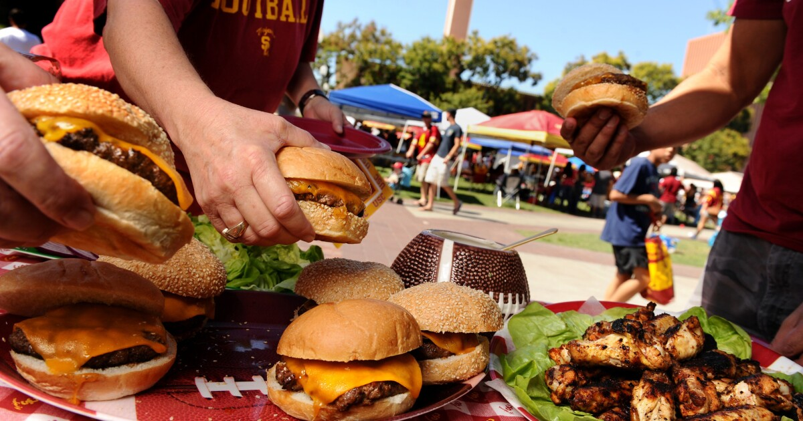

Delicious Burgers!

These burgers will be an awesome way to sizzle up your gamday!
Ingredients
- 1 pound hickory-smoked bacon, chopped
- 1 (8-ounce) container button or crimini mushrooms, sliced
- ¼ teaspoon salt
- 2 onions, chopped
- 2 to 4 cloves garlic, chopped
- ⅓ cup red wine
- 3 pounds ground beef chuck
- 1 ½ teaspoons celery salt
- ½ teaspoon freshly ground black pepper, or to taste
- 1 teaspoon ground cumin
- 2 teaspoons sweet paprika
- ½ teaspoon chile powder
- Sliced cheese, if desired
- 12 hamburger buns
Instructions
- Place the bacon in a large, heavy skillet and heat over medium heat. Cook the bacon until the fat is rendered and the bacon crisps, 8 to 10 minutes. Remove from heat and drain the bacon on paper towels. Drain the bacon fat (save it for sauteeing), leaving 2 to 3 tablespoons in the skillet.
- Heat the skillet over medium-high heat until hot and add the mushrooms. Sauté the mushrooms until tender, 6 to 8 minutes, stirring frequently. Season with the salt. Remove from heat and drain the mushrooms, leaving the fat in the pan. Combine the mushrooms and bacon in the bowl of a food processor.
- Heat the skillet over medium heat and add the onion. Cook the onion, stirring frequently, until it softens to a rich golden color, about 15 minutes. Stir in the chopped garlic and continue to cook just until the garlic is aromatic, about 1 minute. Stir in the wine, scraping any flavoring from the bottom of the pan. Remove from heat and add the onions to the food processor.
- Process the mixture until the bacon, mushrooms and onions are finely ground. Remove from the processor and spread out on a rimmed baking sheet. Refrigerate the mixture, uncovered, until cold.
- In a large bowl, combine the ground chuck with the bacon mixture, along with the celery salt, black pepper, cumin, paprika and chile powder, working with your hands to knead the mixture until evenly combined. Form the mixture into 12 patties. The patties will taste best made the morning of, but can be made up to a day in advance; separate each patty with a piece of wax or parchment paper and cover and refrigerate until ready to cook.
- Heat a grill over medium-high heat until hot. Place the patties on a lightly greased grill rack and cook until charred on the outside and medium (about 135 degrees) in the center, 3 to 4 minutes on each side, or to desired doneness. If adding cheese, place the cheese on the burger about a minute before removing it from the grill to give the cheese a chance to soften. If toasting the buns, place them cut-side down on the rack to warm and toast slightly for a minute or two.
- Place each grilled burger on a bun and serve immediately. Let guests garnish as desired.
Enjoy Your Food!
Home